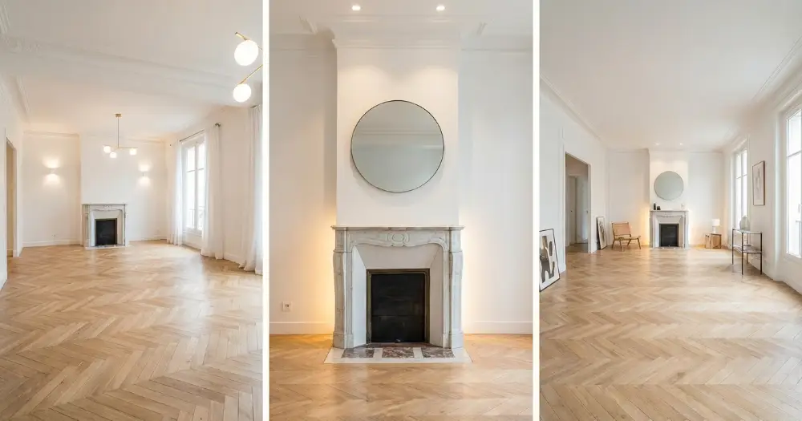

La rénovation d'habitation en Île-de-France représente un investissement majeur qui nécessite une planification minutieuse. En 2026, les prix varient considérablement selon la nature des travaux, la superficie du logement et sa localisation dans la région parisienne. Que vous souhaitiez rafraîchir votre appartement parisien ou entreprendre une rénovation complète de votre maison en banlieue, il est essentiel de connaître les tarifs pratiqués pour établir un budget réaliste. Découvrez dans ce guide complet tous les éléments qui influencent le prix de rénovation d'une habitation en Île-de-France.
Facteurs influençant le prix de rénovation en Île-de-France
Le coût d'une rénovation d'habitation en Île-de-France dépend de nombreux critères spécifiques à la région. La localisation géographique joue un rôle déterminant : les prix à Paris intramuros sont généralement 15 à 30% plus élevés qu'en grande couronne. L'âge du bâtiment influence également les tarifs, notamment pour les logements haussmanniens nécessitant des techniques particulières. La superficie constitue un autre facteur clé, avec des économies d'échelle pour les grandes surfaces. L'accessibilité du chantier, particulièrement problématique dans le centre de Paris, peut majorer les coûts de 10 à 20%. Enfin, le standing souhaité et les matériaux choisis déterminent en grande partie l'enveloppe budgétaire finale.
Impact de la localisation sur les prix
Paris centre (1er-7ème) : +25% par rapport à la moyenne régionale. Petite couronne (92, 93, 94) : tarifs médians. Grande couronne : -15% en moyenne.
Spécificités des logements anciens
Les immeubles haussmanniens et les constructions d'avant 1970 nécessitent souvent des travaux de mise aux normes électriques et de plomberie, augmentant le budget de 20 à 40%.
Grille tarifaire 2026 par type de rénovation
En 2026, les prix de rénovation d'habitation en Île-de-France s'échelonnent selon trois niveaux d'intervention. La rénovation légère (peinture, revêtements, petites réparations) oscille entre 200 et 500€/m² selon les finitions choisies. La rénovation intermédiaire, incluant la cuisine, la salle de bain et quelques cloisons, varie de 600 à 1200€/m². La rénovation lourde avec restructuration complète, mise aux normes et équipements haut de gamme peut atteindre 1500 à 2500€/m². Ces tarifs incluent la main-d'œuvre, les matériaux et les frais annexes spécifiques à la région parisienne comme les contraintes de stationnement et d'évacuation des gravats.
Rénovation par pièce : détail des coûts
Cuisine complète : 8 000 à 25 000€. Salle de bain : 6 000 à 18 000€. Chambre : 3 000 à 8 000€. Salon-séjour : 4 000 à 12 000€ selon la surface.
Spécificités réglementaires en Île-de-France
La région Île-de-France impose des contraintes réglementaires particulières qui impactent directement les coûts de rénovation. Les copropriétés parisiennes sont soumises à des règlements stricts concernant les modifications de façade et les travaux en parties communes. La rénovation énergétique bénéficie d'aides spécifiques mais doit respecter des normes RT 2020 renforcées. Les autorisations de travaux, notamment pour les logements situés dans des secteurs sauvegardés, peuvent prolonger les délais et augmenter les coûts de 5 à 15%. La gestion des déchets de chantier, particulièrement réglementée en région parisienne, représente un poste budgétaire non négligeable de 3 à 8€/m² selon le volume.
Aides et subventions disponibles
MaPrimeRénov' : jusqu'à 20 000€. Éco-PTZ : financement jusqu'à 50 000€. Aides régionales IDF : 1 500 à 3 000€ supplémentaires selon les revenus.
Optimiser son budget rénovation : conseils d'experts
Pour maîtriser le prix de rénovation d'habitation en Île-de-France, plusieurs stratégies s'avèrent efficaces. Planifier les travaux hors saison (automne-hiver) permet d'obtenir des tarifs préférentiels de 10 à 15%. Grouper les interventions limite les frais de déplacement et d'installation de chantier. Choisir des matériaux de qualité intermédiaire offre un excellent rapport qualité-prix sans compromis sur la durabilité. L'anticipation des contraintes techniques évite les surcoûts : diagnostic préalable complet, vérification de l'état des réseaux, évaluation de la portance des planchers. Enfin, comparer plusieurs devis détaillés permet d'identifier les écarts de prix et de négocier les prestations.
Erreurs courantes à éviter
Sous-estimer les frais annexes (+20% du budget). Négliger l'étude préalable. Choisir uniquement sur le prix sans vérifier les assurances et garanties.
Calendrier optimal des travaux
Éviter mai-juillet (haute saison). Privilégier octobre-février pour les gros œuvre. Prévoir 15-20% de marge sur les délais annoncés.
Choisir le bon professionnel en Île-de-France
La sélection d'une entreprise de rénovation qualifiée constitue un enjeu crucial pour la réussite de votre projet en Île-de-France. Vérifiez impérativement les certifications RGE (Reconnu Garant de l'Environnement) pour bénéficier des aides publiques. L'expérience locale est déterminante : une entreprise familiarisée avec les spécificités parisiennes (copropriétés, immeubles anciens, contraintes urbaines) optimisera délais et coûts. Exigez des références récentes et n'hésitez pas à visiter des chantiers terminés. La transparence tarifaire, avec un devis détaillé ligne par ligne, témoigne du sérieux du professionnel. Enfin, privilégiez les entreprises proposant des garanties étendues et un service après-vente réactif.
Labels et certifications à rechercher
RGE Qualibat pour les aides. Label Artisan de Confiance. Certification Qualibat selon les corps de métier. Assurance décennale à jour.
Le prix de rénovation d'habitation en Île-de-France en 2026 nécessite une approche personnalisée tenant compte de vos contraintes spécifiques et de vos objectifs. Avec des tarifs variant de 200 à 2500€/m² selon l'ampleur des travaux, il est essentiel de s'entourer de professionnels expérimentés pour optimiser votre investissement. Mistral Pro Reno, entreprise de rénovation basée à Paris 17ème, vous accompagne dans tous vos projets en Île-de-France avec des devis transparents et des conseils personnalisés. Contactez-nous dès aujourd'hui pour une évaluation gratuite de votre projet.
Questions fréquentes
Quel est le prix moyen au m² pour rénover en Île-de-France en 2026 ?
Le prix varie de 200€/m² pour une rénovation légère à 2500€/m² pour une rénovation lourde, avec une moyenne de 800-1200€/m² pour une rénovation complète.
Les prix sont-ils plus élevés à Paris qu'en banlieue ?
Oui, les prix parisiens sont généralement 15 à 30% supérieurs à ceux de la grande couronne, en raison des contraintes d'accès et de la demande plus forte.
Quelles aides financières sont disponibles en 2026 ?
MaPrimeRénov', l'éco-PTZ jusqu'à 50 000€, les aides régionales d'Île-de-France et les CEE (Certificats d'Économies d'Énergie) selon les travaux réalisés.
Comment obtenir un devis précis pour sa rénovation ?
Contactez plusieurs entreprises certifiées RGE, demandez une visite technique préalable et exigez un devis détaillé avec les prix unitaires et les délais d'intervention.
Besoin d'un devis pour votre projet ?
Contactez Mistral Pro Reno pour un devis gratuit et personnalisé.
Obtenir un devis gratuitBesoin d'un devis pour votre projet ?
Obtenez une estimation gratuite en quelques clics avec notre simulateur de devis.
Simulateur de Devis Gratuit